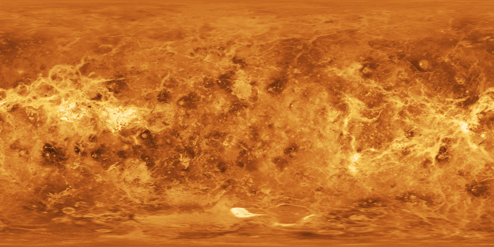
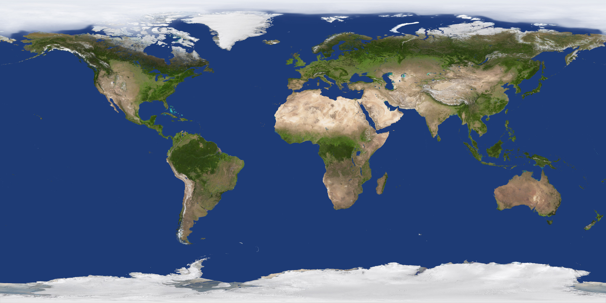

Exploration de l'univers
Notre
Système
Solaire
Un voyage à travers les huit planètes qui orbitent autour de notre étoile - le Soleil — depuis 4,6 milliards d'années
Explorer les planètes
Soleil
Le Soleil est l'étoile au centre de notre système solaire. Il fournit la lumière et la chaleur nécessaires à la vie sur Terre.

Mercure
La plus petite et la plus proche du Soleil. Mercure connaît des variations de température extrêmes allant de −180 °C la nuit à +430 °C le jour. Elle n'a pratiquement pas d'atmosphère.

Vénus
La planète la plus chaude du système solaire avec une température moyenne de 465 °C, due à un effet de serre extrême. Son atmosphère dense est composée principalement de CO₂.

Terre
Notre planète bleue, la seule connue à abriter la vie. Sa surface est couverte à 71% d'eau liquide et son atmosphère protège les êtres vivants des rayonnements solaires nocifs.

Mars
La planète rouge, dont la couleur est due à l'oxyde de fer sur sa surface. Mars abrite Olympus Mons, le plus grand volcan du système solaire, et est candidate à une future colonisation humaine.

Jupiter
La plus grande planète du système solaire. Sa Grande Tache Rouge est une tempête colossale qui dure depuis plus de 350 ans. Jupiter possède 95 lunes connues dont Europe, candidate à la vie.

Saturne
Célèbre pour son spectaculaire système d'anneaux composés de glace et de roches. Saturne est la planète la moins dense du système solaire — elle pourrait flotter sur l'eau !

Uranus
Uranus tourne sur le côté avec une inclinaison axiale de 98°. Sa teinte bleue-verte est due au méthane dans son atmosphère. C'est la planète la plus froide du système solaire (−224 °C).

Neptune
La planète la plus éloignée du Soleil, Neptune connaît les vents les plus violents de tout le système solaire, atteignant 2 100 km/h. Une orbite complète lui prend 165 ans terrestres.